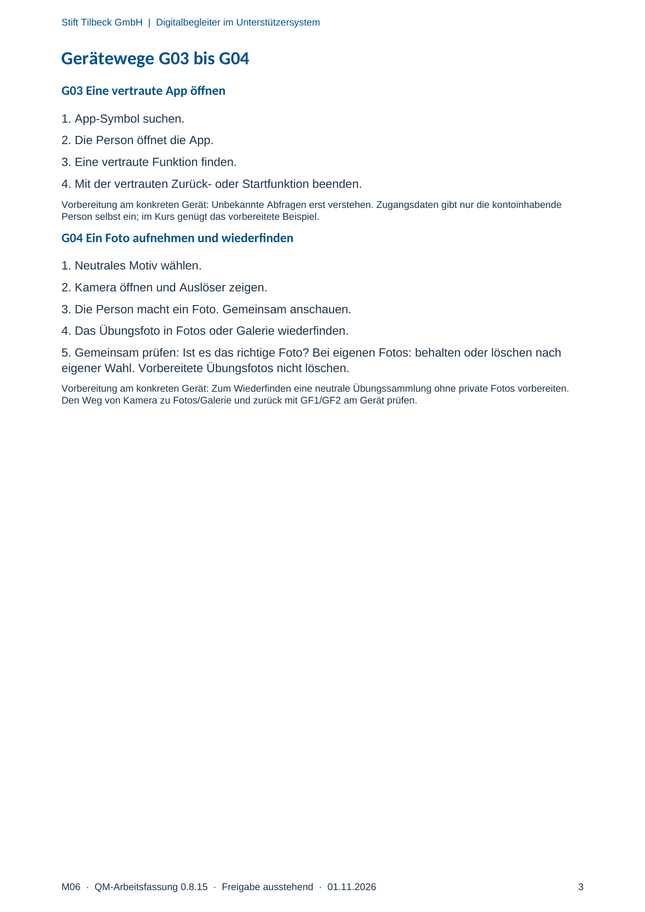

M06 · Originalseite 3
Eine vertraute App öffnen
Original-Druckseite mit G03. Auf derselben Seite stehen außerdem G04. Diese sind dadurch keine zusätzliche Aufgabe.
Fragen und Ankreuzfelder werden auf dem Ausdruck bearbeitet. Die Lesefassung speichert keine Antworten.
Lesefassung · Seite 3
Stift Tilbeck GmbH | Digitalbegleiter im Unterstützersystem
Gerätewege G03 bis G04
G03 Eine vertraute App öffnen
1. App-Symbol suchen.
2. Die Person öffnet die App.
3. Eine vertraute Funktion finden.
4. Mit der vertrauten Zurück- oder Startfunktion beenden.
Vorbereitung am konkreten Gerät: Unbekannte Abfragen erst verstehen. Zugangsdaten gibt nur die kontoinhabende
Person selbst ein; im Kurs genügt das vorbereitete Beispiel.
G04 Ein Foto aufnehmen und wiederfinden
1. Neutrales Motiv wählen.
2. Kamera öffnen und Auslöser zeigen.
3. Die Person macht ein Foto. Gemeinsam anschauen.
4. Das Übungsfoto in Fotos oder Galerie wiederfinden.
5. Gemeinsam prüfen: Ist es das richtige Foto? Bei eigenen Fotos: behalten oder löschen nach
eigener Wahl. Vorbereitete Übungsfotos nicht löschen.
Vorbereitung am konkreten Gerät: Zum Wiederfinden eine neutrale Übungssammlung ohne private Fotos vorbereiten.
Den Weg von Kamera zu Fotos/Galerie und zurück mit GF1/GF2 am Gerät prüfen.
Originalseite ansehen
